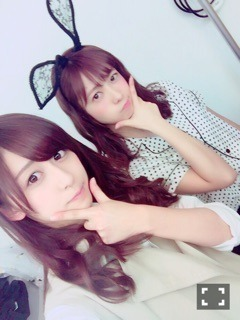

| 2016/06 04 Sat | 斎藤ちはる 時が経つのは早い。ということで46時間テレビが迫ってきています。ということで斎藤家の歌4番募集します！(´>∀<｀)ゝ |
ちはるーむへようこそ！！
春ですね。
いや、春も終わりかけですね。
ちはるです。
後ろにマユコ。
1週間後に46時間テレビが始まります！
もう1週間後！？本当1週間後！？
早い。早すぎるよ。
時が経つのは早い。
そしてまた乃木坂電子台をやります！
1人10分企画！！
そして私の今回の電子台は、
「「斎藤家の歌、4番大募集！」」
現在、1番〜3番まである斎藤家の歌の続き、
4番をファンの皆さんから募集して、
良いものを採用しちゃおう！！
という企画になっております\( ˆoˆ )/
「斎藤家のものだった斎藤家の歌が、
皆さんの斎藤家の歌になる！！」
？？？
ということでございます。
いや、皆さんの斎藤家の歌になったら
そもそも斎藤家の歌じゃなくなるんじゃないか。という疑問はこの際置いておいましょう。
本当に自由で構いません！
むしろ、何でも構いません！
送ってくれた、その事実がもう既に嬉しいから( ◦˙ ˙◦ )
どんどん、どしどし応募してください！
選りすぐりの4番を期待してます！
楽しみだな〜♡
気になった歌詞を紹介しつつ、
歌いつつ、最終的に決定しつつ、
最後には1〜4番を熱唱します。
楽しみにしててね(﹡ˆ ˆ﹡)
応募はこちらから↓↓
斎藤家の歌、1番〜3番の歌詞も乗ってるので
4番作る時の参考にでもしてくださいね♪
まっつんが、
「チョーカーは5つめの猫ちゃんみたいに前で結んでるやつが可愛い♡」
って言ってくれたから写真載せちゃった♡
嬉しい〜〜〜(﹡ˆ ˆ﹡)
真夏が今日チョーカー着けてたんだけど
私のところに見せにきて
「今日ちーちゃんのこと思い出しながらチョーカー着けてきた！」
って言ってきた(｡･o･｡)ﾉ
その時は恥ずかしくて、真夏にやめてよ！！って言ったんだけど
本当はちょっと嬉しかった( ◦˙ ˙◦ )♡
肩出しが真夏なら、
チョーカーはちはるだ！
って言われるくらいになるまで
チョーカー推しでいくね٩(˙▿˙)۶
好き嫌いあると思うけどしょうがない。
人間だもの。
私は好き。それでいいの。
ふいにグアムに向かう時の飛行機の写真。
この時は寒かったけど、もう今は暑いから
時が経つのは早い。って思い知らされる。
本当毎日時が経つのは早い。って思う。
どんだけ言うんだろう。
時が経つのは早い。
そりゃそうだよね。
別れ際、もっと好きになる(斎藤ナマステ)を撮影したのが
ちょうど1年前だもんね。
斎藤ナマステ〜〜〜
そして夏のライブのovertureを作ってくださった
BOOM BOOM SATELLITESさんが
活動休止発表されましたね。。
とても好きなovertureで、
毎ライブ踊らせていただいてました。
今でもovertureを踊ってるちはるをみて好きになったと言ってくれる方がいます。
素敵なovertureをありがとうございました。
いつか直接お礼が言えたらと思ってました。
overtureとても感謝しています。
川島さん、お大事になさってください。
お疲れ様でした。

にゃんちゃんなの。
最後に、明日の握手会ですが
私のあほな火傷がまだ治っておらず
大事をとることにしまして。
左手が握手できませんm(_ _)m
前回に引き続き右手の片手握手になってしまいます。すみませんm(_ _)m
どうかお気を悪くなさらず。。
心と体(指以外)は元気です！
元気に待ってます！
斎藤ちはる